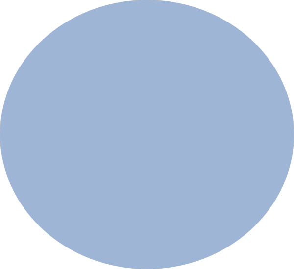
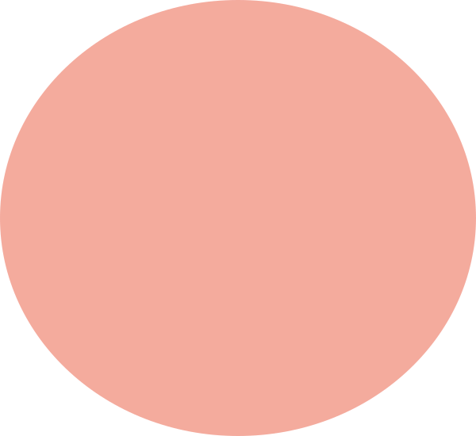
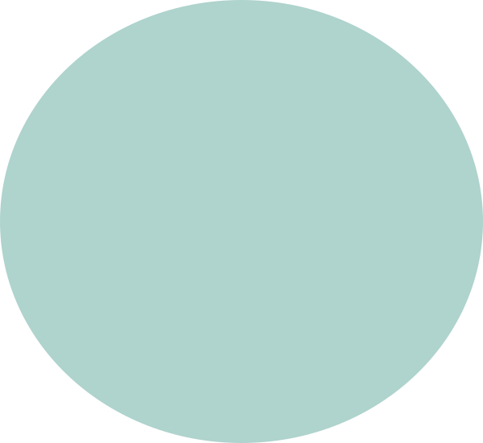
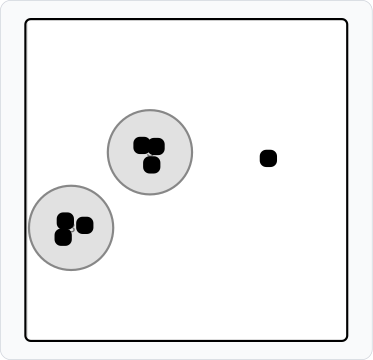
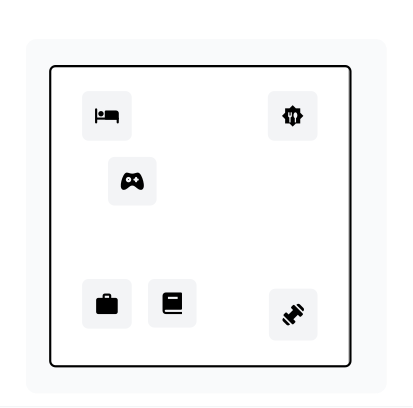
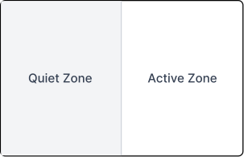

Struggling to fit work, rest, and everything in between into one small space?
BetweenSpaces is a space-planning tool for people living in small apartments. It helps users understand how their daily activities overlap and explore flexible ways to organize their space.
U.S. Census American Housing Survey / Here & Helper
It's not just about having less space. It's about making one space do too much.
ILLUSTRATIVE USER SCENARIO
One desk. Three different routines.
Emma lives in a small studio apartment. She uses the same area to work, eat, and relax. Without clear boundaries between these activities, it's difficult for her to switch from work mode to personal time.
Existing tools organize things—not activities.
Room PlanningFurniture + layout
InspirationIdeas + aesthetics
Retail & UtilityProducts + purchasing
What's missing?
How daily activities interact within the same space.
03 · MY ROLE
So I started looking at the space differently.
This was an individual project. I developed the concept and designed the core experience of BetweenSpaces—from the user scenario and activity mapping to the interaction flow, interface, and visual system.
ROLE
Interaction + UX Design
SCOPE
Research · Concept · UX/UI · Prototype · Visual System
04 · KEY INSIGHT
Maybe the problem isn't just the size of the space. It's what needs to happen inside it.
60%
found storing things difficult.
55%
found hosting visitors difficult.
Source: Houzz, October 2017, via Statista. Survey of 20 U.S. Houzz community members living in homes of 1,000 sq ft or less.
01 — FINDING
Different activities create different spatial challenges.
02 — USER NEED
People need a clearer way to understand how their daily activities share limited space.
03 — DESIGN OPPORTUNITY
What if space planning started with daily activities instead of furniture?
05 · EXPLORATION
So, where do these activities actually overlap?
I explored how everyday activities could share the same physical areas in a small studio apartment.
One space, multiple routines.
Working, eating, and relaxing may happen in the same area, even though each activity has different needs.

WORK

EAT

RELAX
Same physical space
Overlap
The overlap became a starting point for exploring flexible zones.
Mapping these activities helped me identify where different routines might compete for the same space. This led me to explore how smaller, flexible zones could support multiple activities without requiring separate rooms.
06.1 · CONCEPT EXPLORATION
From inspiration to personalized solutions.
01 — INITIAL DIRECTION
A home inspiration app.
I initially wanted to create an app where people could share home decoration ideas and find inspiration for their own spaces.
02 — WHAT CHANGED MY THINKING
Inspiration was already everywhere.
Through competitive research, I found that many existing platforms already offered similar inspiration-sharing experiences. This made me reconsider whether another inspiration app would offer something meaningfully different.
COMPETITIVE RESEARCH
What were existing tools already helping people do?
I compared five existing products across three categories to understand how people currently find inspiration, plan rooms, and choose furniture.
01 — ROOM PLANNING
IKEA Kreativ · Planner 5D
Furniture placement & room layouts
Tools for visualizing furniture and exploring room arrangements.
02 — INSPIRATION
Pinterest · TikTok
Decorating ideas & visual inspiration
Platforms for discovering ideas, trends, and real-life space transformations.
03 — FURNITURE RETAIL
Amazon
Furniture discovery & purchasing
A platform for browsing and comparing furniture products.
03 — MY DECISION
From browsing ideas to planning for real life.
I shifted the concept from a home inspiration platform to a personalized space-planning tool. Instead of offering general decorating ideas, BetweenSpaces would help users explore layouts based on their own space and everyday activities.
THE TRADE-OFF
I chose to focus less on sharing a wide range of decorating ideas and more on helping users solve specific spatial problems. This made the concept more focused, but also meant moving away from the social and inspiration-sharing features of my original idea.
06.2 · DESIGN DECISION
What if I organized the space around activities—not furniture?
I chose activity-first planning because the problem wasn't only about fitting furniture into a room. It was about helping one space support different routines throughout the day.
FURNITURE-FIRST
Where does everything fit?
Starts with furniture placement and available floor space.
ACTIVITY-FIRST
What needs to happen here?
Starts with daily routines, shared areas, and activity relationships.
Furniture→Layout
Activities→Overlap→Micro-zones→Layout
DESIGN PRINCIPLES
01 — Start with activities, not furniture.
Users define what they do in their space before exploring layout suggestions.
02 — Create zones without creating rooms.
Flexible micro-zones help distinguish activities without requiring physical walls or additional space.
03 — Suggest, then let users adjust.
Layout suggestions provide a starting point rather than one fixed solution, allowing users to adapt the plan to their routines.
07 · THE FINAL EXPERIENCE
From overlapping activities to a space that adapts to you.
BetweenSpaces turns activity-based planning into a simple, adjustable experience.
Map Your Activities → Find Overlaps → Explore a Layout → Explain the Zones
01 — MAP YOUR ACTIVITIES
Start with what you do.
Users select their daily activities and mark when they happen throughout the day. This makes their routines the starting point for planning, rather than furniture placement.
• Click cells to mark when activities occur • Multiple time slots can be selected per activity • Black cells indicate active time periods
Static UI preview. Controls are not interactive.
02 — FIND OVERLAPS
See where routines meet.
BetweenSpaces identifies overlapping activities and highlights different levels of conflict, helping users recognize where their routines may compete for the same space.
View analysis diagram detail

STEP 4 OF 4
Conflict Detection
2 overlap zones identified
OVERLAP INTENSITY
Low — 2 activities overlapping
Medium — 3 activities overlapping
High — 4+ activities overlapping
ANALYSIS RESULT
DETECTED OVERLAPS
3
Work + Study + Relax• Medium Density3 activities occupying the same spatial zone
3
Sleep + Study + Relax• Medium Density3 activities occupying the same spatial zone
Static UI preview. Controls are not interactive.
03 — EXPLORE A LAYOUT
Explore a different arrangement.
Based on activity patterns and energy levels, BetweenSpaces suggests a micro-zone layout. Users can review the suggestion and explore how their space might be organized differently.
Back to Suggestions
BEHAVIOR-BASED ZONING 11 / 3
Behavior-Based Zoning 1
Organize space based on activity patterns

Group activities based on energy level and usage patterns to reduce conflicts and support daily rhythm
Static UI preview. Controls are not interactive.
04 — EXPLAIN THE ZONES
Understand the zoning logic.
The suggested layout separates activities into quiet and active zones, with a transition area between them. This helps users understand how different routines can coexist within one space.
Back to Suggestions
BEHAVIOR-BASED ZONING 12 / 3
Core Concept

Quiet Zone
Sleep, relax, and work grouped together for low-stimulation environment
Active Zone
Eating and exercise placed together to contain movement and energy
Natural Transition
Relaxation acts as buffer between rest and focus activities
Physical separation supports mental clarity and functional efficiency
Static UI preview. Controls are not interactive.
08 · OUTCOME & REFLECTION
OUTCOME
Turning behavior into a new way to plan small spaces.
The final prototype connects activity mapping, overlap detection, and flexible layout suggestions into one experience. Instead of starting with furniture, BetweenSpaces helps users explore how their space could support different daily routines.
REFLECTION
Maybe designing a small space isn't about fitting more things in.
This project changed how I think about spatial planning. I learned to look beyond physical layouts and consider how everyday behaviors shape the way people use a space.
If I continued developing BetweenSpaces, I would test the layout suggestions with people living in small apartments to understand how well the micro-zones support their routines.